Clúster 02 - Primeros pasos: 3 NUCs, mucho foro y una mayúscula que casi me mata
0. De dónde parto (y qué quiero)
En clase vemos teoría, pero yo quería tocar chicha: un clúster donde romper cosas sin miedo. Tres NUC
NUC6CAYH con Celeron J3455, Proxmox recién instalado un poco a lo loco (siguiente,
siguiente, lo reconozco), cada uno con su IP 192.168.1.10, .20 y
.30, y un Zyxel GS1200-8 en la .3. Lo primero que me saluda: el cartelito
No valid subscription. Empezamos pidiendo perras.
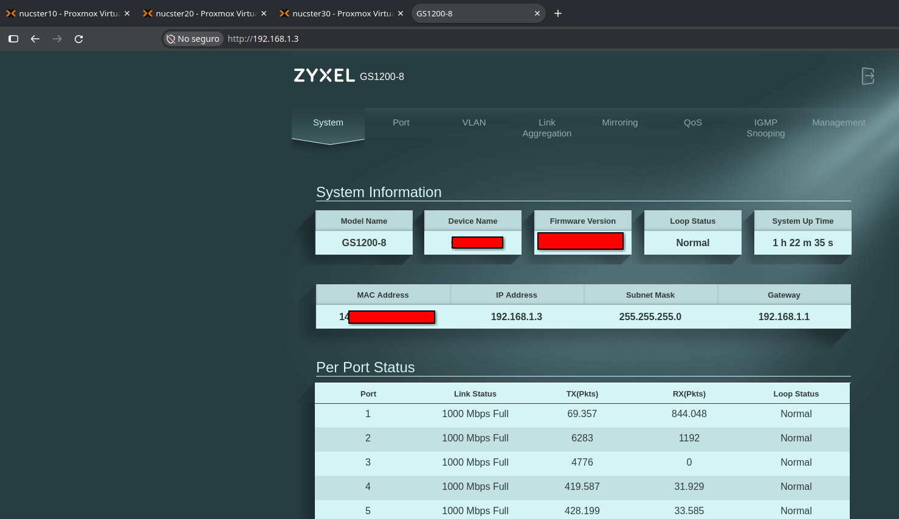
PNG · 1479×856 px · 157 KB · material propio de Christian Comes · licencia: todos los derechos reservados.
1. Inventario: los gemelos y el raro
Como nos enseñan: primero inventariar, luego tocar. Y sorpresa: dos Crucial BX500 de 1 TB al 0% y un
Samsung 860 EVO de 250 GB al 18% en el 30, con la raíz de 66 GB frente a 93 GB. En los foros me lo
dejaron claro: con discos así, ni se te ocurra Ceph productivo. Para HA me vale réplica entre
gemelos o NFS. El 30 será la casa de pfSense y es el único con USB-Ethernet: irá de WAN dedicada,
que de trunk esos enx... dan sustos.
| Nodo | Modelo | CPU | RAM | SSD | IP |
|---|---|---|---|---|---|
| nucster10 | NUC6CAYH | Celeron J3455 | 8 GB | Crucial BX500 1 TB | 192.168.1.10 |
| nucster20 | NUC6CAYH | Celeron J3455 | 8 GB | Crucial BX500 1 TB | 192.168.1.20 |
| nucster30 | NUC6CAYH | Celeron J3455 | 8 GB | Samsung 860 EVO 250 GB | 192.168.1.30 |
| Tipo | Marca | Modelo |
|---|---|---|
| Switch gestionado | Zyxel | GS1200-8 |
| Adaptador de red | RyuuOto | 1000 Mbps |
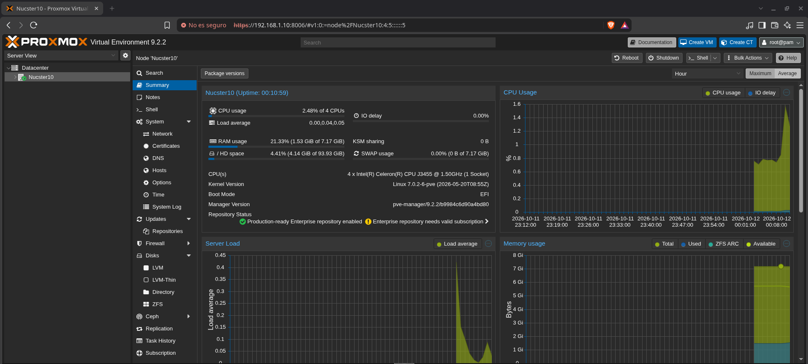
PNG · 1919×867 px · 190 KB · material propio de Christian Comes · licencia: todos los derechos reservados.
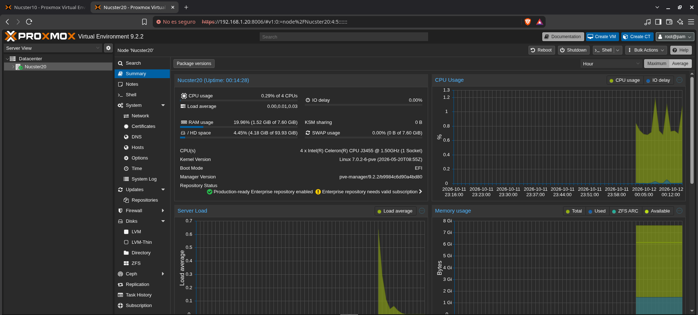
PNG · 1919×867 px · 193 KB · material propio de Christian Comes · licencia: todos los derechos reservados.
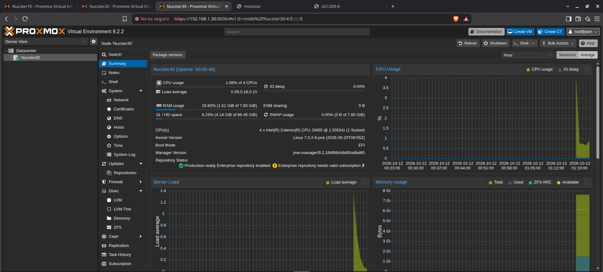
PNG · 1919×867 px · 191 KB · material propio de Christian Comes · licencia: todos los derechos reservados.
2. Fuera el cartel de pago
Venía con apuntes viejos de .list y PVE 9 usa .sources DEB822. Dos
401 a enterprise y bloqueo total. Doc oficial + foro y listo:
cp /etc/apt/sources.list.d/pve-enterprise.sources /root/pve-enterprise.sources.bak
sed -i 's|https://enterprise.proxmox.com|http://download.proxmox.com|; s/Components: pve-enterprise/Components: pve-no-subscription/' /etc/apt/sources.list.d/pve-enterprise.sources
echo "Enabled: false" >> /etc/apt/sources.list.d/ceph.sources
apt update && apt full-upgrade -y # 182 paquetes, kernel 7.0.2-6 -> 7.0.14-23Después: pve-manager 9.2.21 clavadito en los tres. El popup se anula con el truco del
void, pero ojo: el title sigue saliendo en el grep como
código muerto, hay que buscar el void. Y Ctrl+Shift+R
o sigues viendo el JS viejo. Cuando desapareció casi grito.
3. Fichas con fastfetch
Pedí neofetch y me enteré de que en Debian 13 está muerto. Otro aprendizaje: ahora es
fastfetch. Captura por nodo y a comparar. Solo sale IP privada y modelo: publicable.
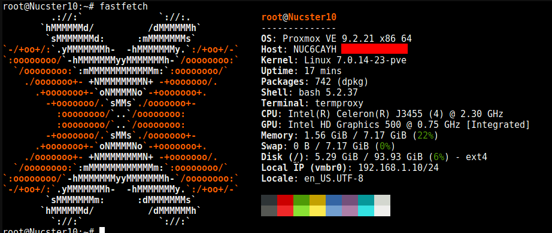
PNG · 922×390 px · 71 KB · material propio de Christian Comes · licencia: todos los derechos reservados.
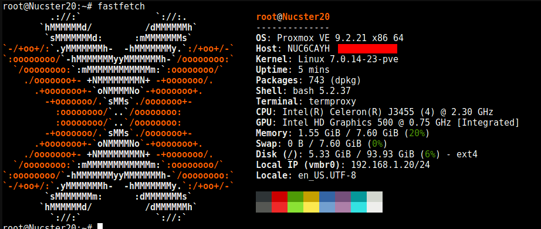
PNG · 922×390 px · 72 KB · material propio de Christian Comes · licencia: todos los derechos reservados.
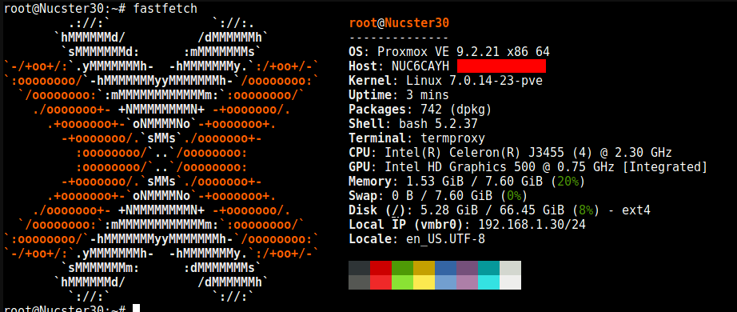
PNG · 922×390 px · 72 KB · material propio de Christian Comes · licencia: todos los derechos reservados.
4. La red: minúsculas y el bridge que ya venía bien
El clúster es tiquismiquis con los nombres: minúsculas siempre y /etc/hosts con las 3
líneas. Ping 0% a menos de 0.3 ms, DNS Movistar, Europe/Madrid sincronizado e internet
a ~8 ms. Y el vmbr0 ya venía VLAN aware con gateway
192.168.1.1. Mi plano: VLAN 1 mgmt, 10 LAN tras pfSense, 20 LAB, 99 WAN.
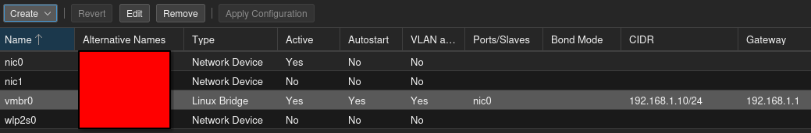
PNG · 1039×172 px · 26 KB · material propio de Christian Comes · licencia: todos los derechos reservados.
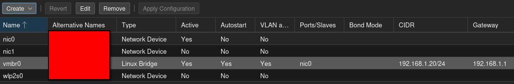
PNG · 1039×172 px · 26 KB · material propio de Christian Comes · licencia: todos los derechos reservados.
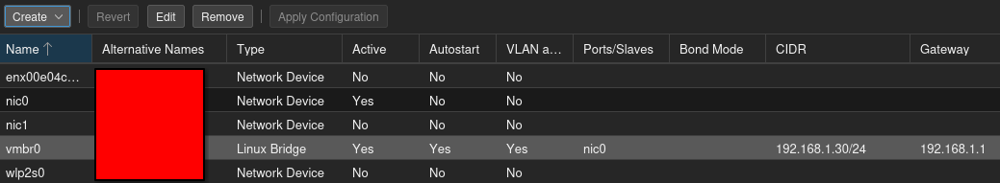
enx... quieto hasta la WAN.PNG · 1039×191 px · 29 KB · material propio de Christian Comes · licencia: todos los derechos reservados.
5. El clúster (con susto)
Pre-vuelo (versiones clavadas, sin corosync.conf, qm/pct vacíos, backup de
14K) y adelante:
pvecm create Nucster --link0 192.168.1.10
pvecm add 192.168.1.10 --link0 192.168.1.20 # responde "yes", no "y"
pvecm add 192.168.1.10 --link0 192.168.1.30El y me abortó el join y me cerró la sesión: pánico, pero el nodo seguía vivo al ping y
entré por consola física. Con yes completo, dentro.
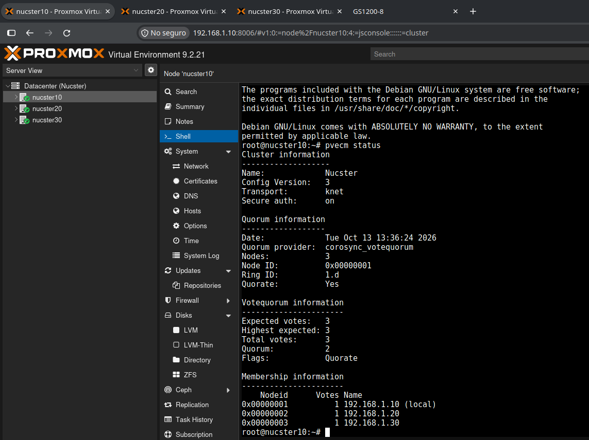
PNG · 1143×856 px · 148 KB · material propio de Christian Comes · licencia: todos los derechos reservados.
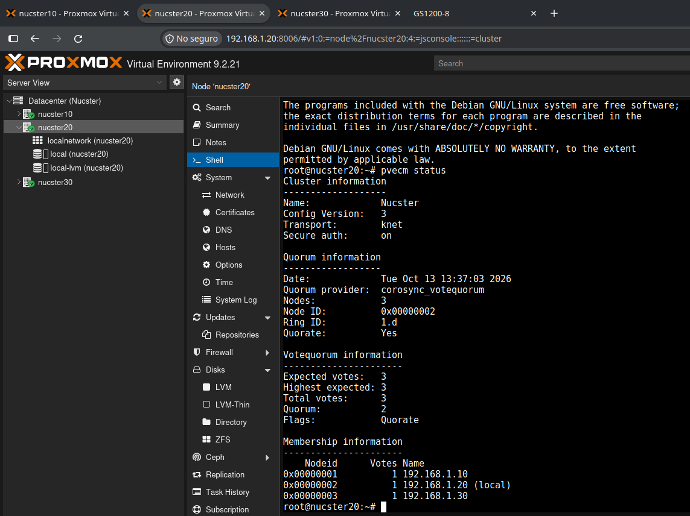
PNG · 1143×856 px · 158 KB · material propio de Christian Comes · licencia: todos los derechos reservados.
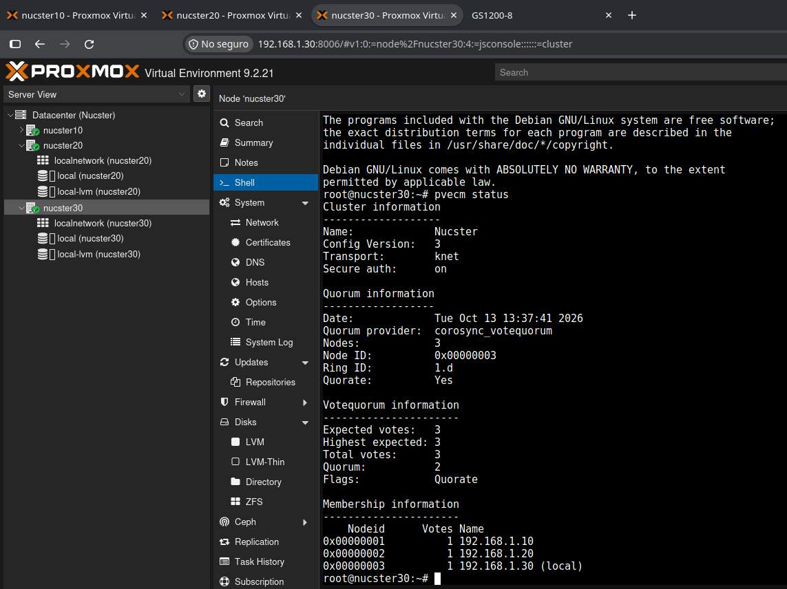
PNG · 1143×856 px · 167 KB · material propio de Christian Comes · licencia: todos los derechos reservados.
Y llegó LA lección: unknown node 'Nucster10' (500), Standalone viendo 3
nodos, ? grises y 401 No ticket. Causa: mi cambio a minúsculas dejó un
fantasma /etc/pve/nodes/Nucster10 con la cert vieja. Fix: moverlo a /root,
reiniciar proxy y re-login. En Proxmox los nombres siempre en minúsculas desde la instalación. La
doc lo dice, los foros lo repiten, y yo lo aprendí a base de susto.
Cierre
Día cerrado: sin nag, en 9.2.21, en clúster y con fichas. Siguiente: pfSense en el 30,
trunks al GS1200-8 y primer HA de juguete con réplica 10↔20. Si se cae uno y la CT sigue viva,
medalla.
Vídeo demostración
El vídeo muestra el inventario, y el funcionamiento como clúster de Nucster.
Formato WebM (VP8 + Opus) · 5,0 MB · 1280×720 · 1 min 13 s · grabación propia de Christian Comes · licencia: todos los derechos reservados.